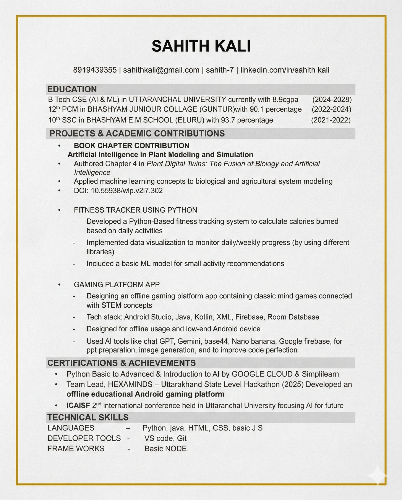
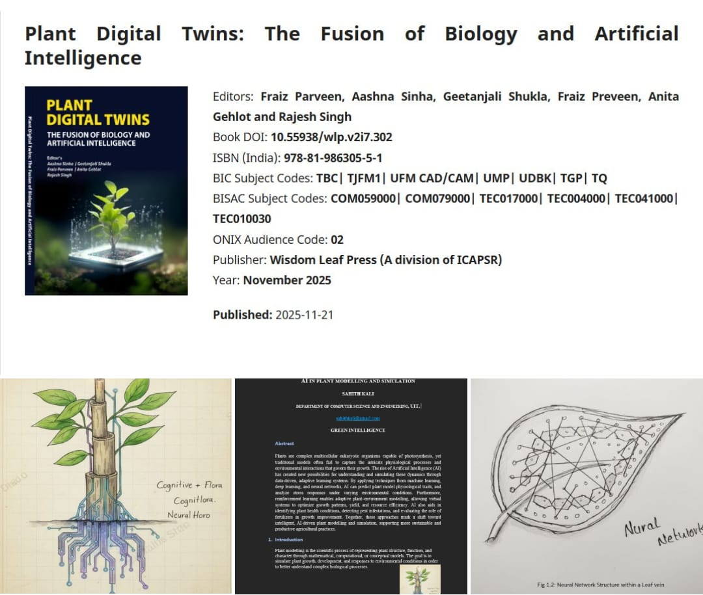
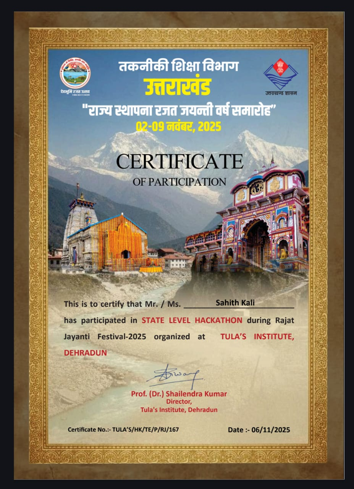

About Me
I am Sahith Kali from Uttaranchal University, a Computer Science student passionate about building innovative technology solutions. I enjoy working with web development, artificial intelligence, and interactive learning platforms. Currently, I am developing projects that combine education and gaming to make learning more engaging.
Skills Learned:
- Frontend Development
- Python
- Java (Beginner)
- Problem Solving
- Creative Content Writing
Contact Info
Email: sahithkali@gmail.com
Phone: +91 8919439355

Resume
Computer Science student specializing in Artificial Intelligence and Machine Learning. Passionate about developing technology solutions that combine AI, programming, and real-world applications. I focus on projects that make learning engaging through educational gaming and interactive platforms.
- Contributed a chapter in AI for Plant Modeling and Simulation
- DOI of the chapter
- Developing a Gamified Web App connecting Classic Games with STEM concepts

ICAISF Conference
Worked on real time datasets of software companies like Microsoft and Google to analyze the impact of Artificial Intelligence in the software industry.
- Collected data from major IT companies
- Identified trends where AI replaces repetitive tasks
- Studied how humans can be reinforced instead of replaced

Book Chapter Contribution
Studied machine learning libraries that monitor plant growth and environmental responses using automated observation systems.
- OpenCV measures plant growth
- Scikit-Learn predicts growth patterns
- Matplotlib visualizes plant growth data
- Studied plant responses under different environmental conditions

SALT Project
Strategy Assisted Learning Techniques is an educational gaming platform designed to combine classic games with STEM education concepts.
- Educational datasets like periodic table integrated into game mechanics
- Gamified learning environment for STEM concepts
- Accessible learning platform for students